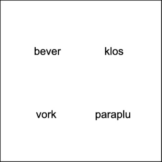
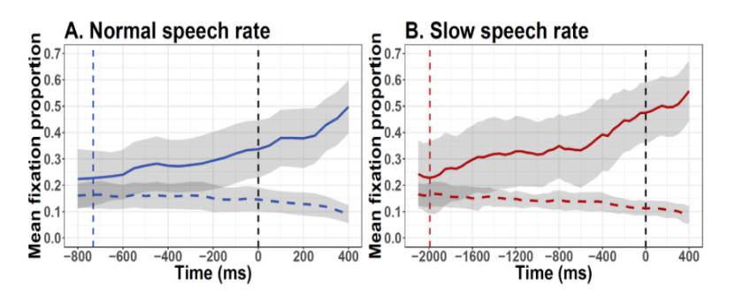

How is everyone doing today? Any questions from yesterday?
Plan of today
Visual World Paradigm
History
Visual World Paradigm
Confounds of the Visual World Paradigm
Uses
Pros & cons
The Visual World Paradigm
The Visual World Paradigm
The Visual World Paradigm (VWP) is an eye-tracking paradigm that commonly describes an experiment where auditory and visual stimuli are presented to a participant, with the goal of understanding how the latter influences the former around a scene.
History
“While on a safari in Africa […] I noticed a hungry lion slowly moving through the tall grass toward a herd of grazing zebra”.
Cooper’s (1974) method became later on popularised by Tanenhaus et al. (1995).
Cooper, 1974
Uses
Different levels of language comprehension (Huettig et al., 2011)
Adjective informativeness depends on speaker’s reliability.
Uses
Dialogue (e.g., Brown-Schmidt & Tanenhaus, 2008)
Common ground establishment.
Paralinguistic cues (e.g., Arnold et al., 2004)
New versus given information following a disfluency.
Linguistic relativity (e.g., Papafragou et al., 2008).
Fixation preference following encoding of motion.
And many more (e.g., bilingualism, semantics/syntax interface,…)
Uses
Different populations
Children
Aphasic patients (e.g., Mirman et al., 2011)
Non-native listeners (e.g., Ito et al., 2018)
What are we interested in?
(Mostly) Fixations and saccades
When & where
Operationalisation
Fixation counts, proportion on ROIs,…
100-200 ms to launch a saccade (Matin et al., 1993)
What are we interested in?
(Newer) Pupil size
Ease of processing
Challenges for experimental design
Linking hypothesis
Linking hypothesis: Link response to a hypothesized process.
Eye movements reflect lexical access.
(In reading) Time spent looking at a word == how long it takes to process it.
Visual World Parading = Linguistic + non-linguistic information.
What guides what? Whether and how do they interact?
How can we be sure that our results eye-movements were linguistically mediated?
Linking hypothesis
“Default”: Increases in fixation == increases in activation.
Automatised routines; recognising a name triggers these routines, in turn, these routines trigger a saccade and thus fixations on objects (Tanenhaus et al., 2000).
Linking hypothesis
Not necessarily (see Magnuson, 2019):
Language processing guiding vision (e.g., Allopenna et al., 1998).
Vision also affecting language processing (e.g. Huettig & McQueen, 2007).
Listeners getting ahead of speech (e.g., Altmann & Kamide, 1999).
Linking hypothesis
But why do we care?
Role of instructions and presentation
Click on the red [target]
Role of preview window
Activation of phonological and semantic information
Bottom-up versus top-down effects
Passive versus active processes (e.g., Pickering & Gambi’s (2018) prediction-by-production)
Level of interest
Lexical access v Sentence comprehension versus Discourse comprehension
Basics of the Visual World Paradigm
Elements
Structure
Confounds
Variations
Visual World Paradigm
Working example: Altmann and Kamide (1999)
Anticipation (~prediction) of lexical items given verb semantics.
DV: Fixations to objects on screen
IV: Verb semantics: constraining versus unconstraining
“The boy will eat the cake” versus “The boy will move the cake”
Elements
What are the elements in Altmann and Kamide that you can identify as characteristic of the Visual World Paradigm?
Auditory stimuli
Visual stimuli
Task
Auditory stimuli
Example of Altmann and Kamide?
The boy will eat the cake (constraining).
The boy will move the cake (unconstraining).
Control of stimuli:
Context matched.
Counterbalancing.
Comparison between levels.
Inter alia.
Auditory stimuli
Participants listen to these sentences.
Need to record our stimuli.
Tips:
All recordings in one session.
Talk to the person recording (to avoid monotonous voice).
Sound-isolating recording studio.
Several recordings of the same sentence.
Consider cross-splicing.
Editing tools: Audacity, Praat.
Control speaker’s traits.
Auditory stimuli
Eye-movements in the VWP are time-locked.
Time window of analysis around a critical part of speech e.g., critical word.
Triggers (coding)
Different time windows to explore different processes within speech comprehension.
Integration versus Prediction (analysis)
Auditory stimuli
Can you think of other elements of audio that can serve as a time anchor?
Prosodic contour.
Case marking.
Speech errors.
Auditory stimuli
Can you think of other properties of audio that can be manipulated?
Speech rate.
Traits of the speaker.
Prosody.
Noise.
Inter alia.
Visual stimuli
Elements in Altmann and Kamide?
Visual stimuli
Elements in Altmann and Kamide?
4: Target (cake) and distractors (ball, train, car).
And the boy.
Visual stimuli
Eye-movements in the VWP are space-locked: Areas of Interest
How many items can there be on display?
How can items be displayed?
How can we manipulate the items?
How can we select images?
Visual stimuli
How many items can there be on display?
[2, 5]
Working memory (see Huettig et al., 2011)
Visual stimuli
How can items be displayed?
Properties of the display allow for exploration of different processes in speech comprehension.
Semirealistic scenes: World knowledge.
Arrays: Conceptual and lexical knowledge associated with individual words.
Printed words: Phonological information and orthographic processing, comprehension of abstract words.
Visual stimuli
How can items be displayed?
Altmann & Kamide, 1999
Huettig & McQueen, 2007

Huettig & McQueen, 2007
Visual stimuli
How can we manipulate the items?
Relationship between target and distractor(s).
Semantic distance, phonological distance, etc. - even shape!
Target (critical word) might not even be present.
Visual stimuli
How can we manipulate the items?
Allopenna et al., 1996
Visual stimuli
How can we select images?
Databases or create your own.
Later case: Need for validation cf. confounds.
Name agreement.
Tips:
Control for visual salience.
Control for size (coding).
Familiarisation phase.
If also pupillometry -> stimuli luminance.
Task
As a function of your research question.
Direct action
Look and listen
But also;
Perform a concurrent task? (impair WM)
Interpretation of speech?
Remember: the active viewer (Yarbus).
Structure
Before the experiment begins
Calibration and validation.
Number of elements for interest areas.
Size of interest areas.
Horizontal and vertical areas.
Decide sample rate.
Structure
Drift correction
Ensure accuracy.
Where?
Middle (no bias for an image beforehand).
When?
Beginning of every trial/block.
Preview window
Very specific to the VWP
Presentation of visual stimuli without auditory stimuli, so that participants can inspect the visual scene.
Remember the linking hypothesis!
Pros and cons of preview window (e.g., Huettig & McQueen, 2007).
Eye movements towards objects as a function of preview window.
Pre-activation of labels.
Contestable?
Preview window
Length?
Previous research e.g., 2000 ms, 1000 ms from target onset, etc.
Level of interest e.g., phonological activation versus semantic activation.
Audio presentation
Send triggers for audio.
Give enough time for a measure to occur.
Altmann and Kamide: Trigger -> verb onset.
End of trial
Task?
If no task:
Give enough time for processes to fully unfold.
Exercise: RQ & measures of interest
Go [here] and type your idea!
What would you be interested in? How would the design look like?
Analysis
DV = saccade latency, proportion of fixations, empirical logits, yes/no fixations…
IV = your experimental variables and time.
Time window of analysis.
Marked by your triggers (e.g., sentence onset, target onset, target offset…)
Research question.
Analysis
Interest: Prediction of a noun following verb semantics, what is more interesting for you? TW from sentence onset, from verb onset, or from noun onset? What reflects prediction?
Verb onset - noun onset (+200 for saccades)
Reference resolution, word recognition, …
Analysis
Collapse all samples before and after.
Are there more fixations on the cake when is preceded by eat compared to move?
Analysis
Time binning.
Related to sampling frequency.
Group of samples.
With 500 Hz, you have 500 samples per second, one every 2 ms.
You can make bins of 10 ms (contains 5 samples), 20 ms (contains 10 samples)…
You cannot make bins of 15 ms.
Analysis
More on Friday
Divide in approaches (see Ito & Knoeferle, 2023):
Linear
(G)LMM/ANOVAs by subjects & items/t-tests
There is an increase or a decrease over time. Cannot tell when this increase/decrease happens, but (G)LMMs are the most common analysis.
How this increase/decrease over time occurs. Some can assess when the differences in conditions become statistically significant.
Results
Commonly, plots.
x: time
y: proportion/probability of fixations.
line style: condition
Results
Exercise: Huettig & McQueen (2007)
Any questions on the paper?
What is the visual display? Why?
How many samples in 20 ms bins?
What is the time window of analysis? Why?
What is the difference between Exp 1 and Exp 2?
Exercise: Huettig & McQueen (2007)
What is the visual display? Why?
4 images representing 3 related and 1 unrelated items to the target.
Phonology, shape, semantics.
No target displayed to maximise fixations to distractors.
Distractors chosen to explore whether fixations are driven by phonology, visual or semantic information.
Exercise: Huettig & McQueen (2007)
How many samples in 20 ms bins?
Recording at 250 Hz, 250 samples per second.
5 samples.
Exercise: Huettig & McQueen (2007)
What is the time window of analysis? Why?
From noun onset +200 (to account for a saccade) - 1000 ms.
Exercise: Huettig & McQueen (2007)
What is the difference between Exp 1 and Exp 2?
Preview window.
Confounds
Given your knowledge in linguistics & what we’ve discussed, what should we keep in mind when creating a VWP experiment?
Confounds
Image presentation.
Salience
Confounds
Image presentation
Name agreement
Population
Clarity
Confounds
Image presentation
Size & quality
Counterbalance position
Luminance (! pupillometry)
Confounds
Image relationship
Semantic distance
Phonological overlap
Lexical properties e.g., frequency.
Confounds
Audio properties
Same/different voices
Uncanny valley
Phonetic cues (e.g., co-articulation)
Cross-splicing audios
Volume
Prosody
Accent
Confounds
Audio properties
Speech rate

Variations
Preferential look paradigm (~ VWP for infants)
Different tracker
Stimuli presentation
What is discourse-old versus difficult.
Messier data, fewer trials
Variations
Language production.
The link between planning and eye movements is less direct.
Eye movements ~ labour division of speech production (e.g., Levelt’s model)
Conceptual
Formulation
Articulation
How does looking at an object relate to production stages?
Do people fixate for longer on objects harder to retrieve?
Do people start producing speech prior to fixating on the object to name?
Variations
Language production.
Only images.
Time-locked to voice onset/offset.
Manipulations: Image degradation, word frequency, etc.
Relation to the level of interest.
Network task
Pistono & Hartsuiker, 2023
Variations
Virtual reality e.g., Eichert et al., 2018
Mouse-tracking e.g., King et al., 2019
Web-cam tracking e.g., Slim & Hartsuiker, 2023
ROIs size
Display size
Pros & cons
Pros
Ecological validity.
Relatively easy.
Accessible e.g., no meta-linguistic judgements.
Cons
Ecological validity.
Confounding variables.
Linking hypothesis.
Building a VWP experiment
References
Allopenna, P. D., Magnuson, J. S., & Tanenhaus, M. K. (1998). Tracking the time course of spoken word recognition using eye movements: Evidence for continuous mapping models. Journal of memory and language, 38(4), 419-439.
Altmann, G. T., & Kamide, Y. (1999). Incremental interpretation at verbs: Restricting the domain of subsequent reference. Cognition, 73(3), 247-264.
Arnold, J. E., Tanenhaus, M. K., Altmann, R. J., & Fagnano, M. (2004). The old and thee, uh, new: Disfluency and reference resolution. Psychological science, 15(9), 578-582.
Brown‐Schmidt, S., & Tanenhaus, M. K. (2008). Real‐time investigation of referential domains in unscripted conversation: A targeted language game approach. Cognitive science, 32(4), 643-684.
Cooper, R. M. (1974). The control of eye fixation by the meaning of spoken language: a new methodology for the real-time investigation of speech perception, memory, and language processing. Cognitive psychology.
Eichert, N., Peeters, D., & Hagoort, P. (2018). Language-driven anticipatory eye movements in virtual reality. Behavior research methods, 50, 1102-1115.
References
Grodner, D. J., Klein, N. M., Carbary, K. M., & Tanenhaus, M. K. (2010). “Some,” and possibly all, scalar inferences are not delayed: Evidence for immediate pragmatic enrichment. Cognition, 116(1), 42-55.
Huettig, F., & McQueen, J. M. (2007). The tug of war between phonological, semantic and shape information in language-mediated visual search. Journal of memory and language, 57(4), 460-482.
Huettig, F., Olivers, C. N., & Hartsuiker, R. J. (2011). Looking, language, and memory: Bridging research from the visual world and visual search paradigms. Acta psychologica, 137(2), 138-150.
Huettig, F., Rommers, J., & Meyer, A. S. (2011). Using the visual world paradigm to study language processing: A review and critical evaluation. Acta psychologica, 137(2), 151-171.
Ito, A., & Knoeferle, P. (2023). Analysing data from the psycholinguistic visual-world paradigm: Comparison of different analysis methods. Behavior Research Methods, 55(7), 3461-3493.
Ito, A., Pickering, M. J., & Corley, M. (2018). Investigating the time-course of phonological prediction in native and non-native speakers of English: A visual world eye-tracking study. Journal of Memory and Language, 98, 1-11.
References
King, J. P., Loy, J. E., & Corley, M. (2018). Contextual effects on online pragmatic inferences of deception. Discourse Processes, 55(2), 123-135.
Knoeferle, P., Crocker, M. W., Scheepers, C., & Pickering, M. J. (2005). The influence of the immediate visual context on incremental thematic role-assignment: Evidence from eye-movements in depicted events. Cognition, 95(1), 95-127.
Magnuson, J. S. (2019). Fixations in the visual world paradigm: where, when, why?. Journal of Cultural Cognitive Science, 3(2), 113-139.
Matin, E., Shao, K. C., & Boff, K. R. (1993). Saccadic overhead: Information-processing time with and without saccades. Perception & psychophysics, 53, 372-380.
Mirman, D., Yee, E., Blumstein, S. E., & Magnuson, J. S. (2011). Theories of spoken word recognition deficits in aphasia: Evidence from eye-tracking and computational modeling. Brain and language, 117(2), 53-68.
Papafragou, A., Hulbert, J., & Trueswell, J. (2008). Does language guide event perception? Evidence from eye movements. Cognition, 108(1), 155-184.
Pickering, M. J., & Gambi, C. (2018). Predicting while comprehending language: A theory and review. Psychological bulletin, 144(10), 1002.
References
Pistono, A., & Hartsuiker, R. J. (2023). Can object identification difficulty be predicted based on disfluencies and eye-movements in connected speech?. Plos one, 18(3), e0281589.
Slim, M. S., & Hartsuiker, R. J. (2023). Moving visual world experiments online? A web-based replication of Dijkgraaf, Hartsuiker, and Duyck (2017) using PCIbex and WebGazer. js. Behavior Research Methods, 55(7), 3786-3804.
Tanenhaus, M. K., Spivey-Knowlton, M. J., Eberhard, K. M., & Sedivy, J. C. (1995). Integration of visual and linguistic information in spoken language comprehension. Science, 268(5217), 1632-1634.
Tanenhaus, M. K., Magnuson, J. S., Dahan, D., & Chambers, C. (2000). Eye movements and lexical access in spoken-language comprehension: Evaluating a linking hypothesis between fixations and linguistic processing. Journal of Psycholinguistic Research,29, 557–580.
Van Bergen, G., & Bosker, H. R. (2018). Linguistic expectation management in online discourse processing: An investigation of Dutch inderdaad’indeed’and eigenlijk’actually’. Journal of Memory and Language, 103, 191-209.